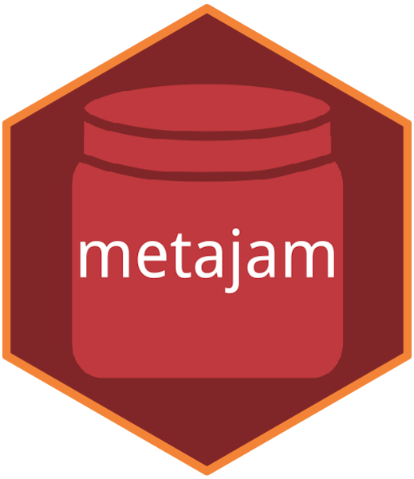
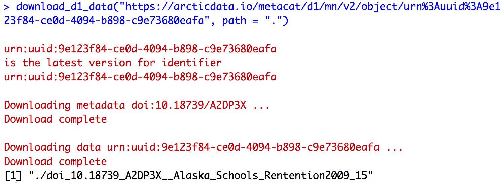

Download and read data and metadata from repositories in the DataONE network.
Installation
The metajam package can be installed from GitHub using the devtools package:
#install.packages("devtools")
devtools::install_github('NCEAS/metajam', build_vignettes = TRUE)Download data
To download a data object, specify the data object URL and local download path in the download_d1_data function:
library(metajam)
download_d1_data("https://arcticdata.io/metacat/d1/mn/v2/object/urn%3Auuid%3A9e123f84-ce0d-4094-b898-c9e73680eafa", path = ".")

The output is saved in a folder with the name {metadata_id}__{file_name}, which contains the data file and its associated metadata. The metadata follows these conventions:
-
{file_name}__summary_metadata.csv- summary metadata in a tabular format, which includes date downloaded, data file name, file/metadata URL’s, etc. -
{file_name}__full_metadata.xml- metadata xml file, if it could be downloaded -
{file_name}__attribute_metadata.csv- attribute metadata in a tabular format, if included in the metadata xml -
{file_name}__attribute_factor_metadata.csv- attribute factor metadata in a tabular format, if included in the metadata xml
How to get the URL to your dataset of interest ?
From DataONE or any currently supported data repository (KNB, Arctic Data Center, LTER PASTA or EDI), you can right-click on the Download button of a specific dataset and choose Copy Link Address to copy the URL to your clipboard

Read data
The read_d1_files function allows you to read the downloaded data and metadata directly into your R environment. Simply run the function with the folder path to the downloaded objects, and all data and metadata files will be returned as data frames stored in a list. Use {object_name}$data to access the data, and {object_name}${metadata_type}_metadata to access its associated metadata.
schools <- read_d1_files("./doi_10.18739_A2DP3X__Alaska_Schools_Rentention2009_15")
Quick Overview of metajam
- Recent presentation on
metajamand its functionalities: Click here - Package website: https://nceas.github.io/metajam/
Acknowledgements
Work on this package was supported by:
- NSF-PLR grant #1546024 to M. B. Jones, S. Baker-Yeboah, J. Dozier, M. Schildhauer, and A. Budden
- Long Term Ecological Research (LTER) National Communications Office (LNCO), NSF grant #1545288 to F. Davis, M. Schildhauer, S. Rebich Hespanha, J. Caselle and C. Blanchette
Thanks also go to NCEAS computing team members Mark Schildhauer, Peter Slaughter, Dominic Muellen, Steven Chong, Jesse Goldstein and Matt Jones for their inputs on this package.